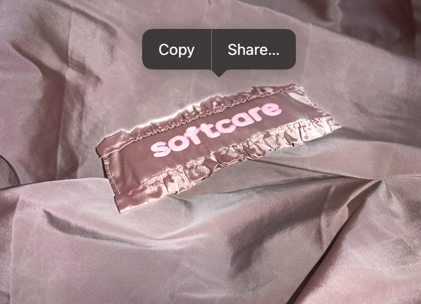

this website is handmade. last update 07/06/23

(1.1) scan. unfolded poster.
folded back
together to become the wrapper

(1.2.1) spread

(1.2.2) spread

(1.3) insight of a page
(1.4) folding of the wrapper

(2.1) stars. asset of the
website
(2.2) screenrecording of the
website (link)

(3.1) research question (link)

(3.2.1) soft extension

(3.2.2) soft extension

(3.3.1) spread of the research booklet

(3.3.2) spread of the research booklet